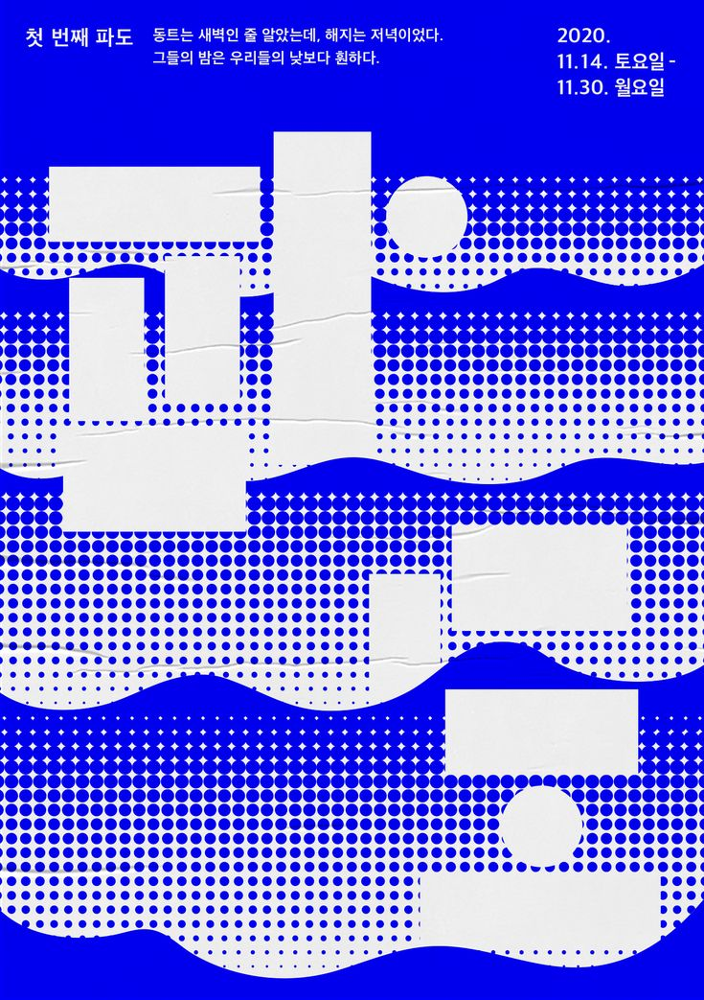

Poster Design
poster redesign
포스터 리디자인
2024.11.18~2024.12.09
A1_594*841
Keyword
파도, 새로운 기회, 움직임, 변화


Concept
기존 전시 포스터를 재해석한 포스터 디자인
파도를 역동적인 이미지로 활용하여 거대한
파도의 분위기를 표현했다. 파도가 치며 물이
튀는 것을 표현하기 위해 점을 활용했다.
또한 포스터의 내용이 폐조선소에 새로운 기회를
주고자 하는 전시이기에 조선소가 부흥했던 시기의
향수를 불러오고자 도트를 소재로 디자인했다.